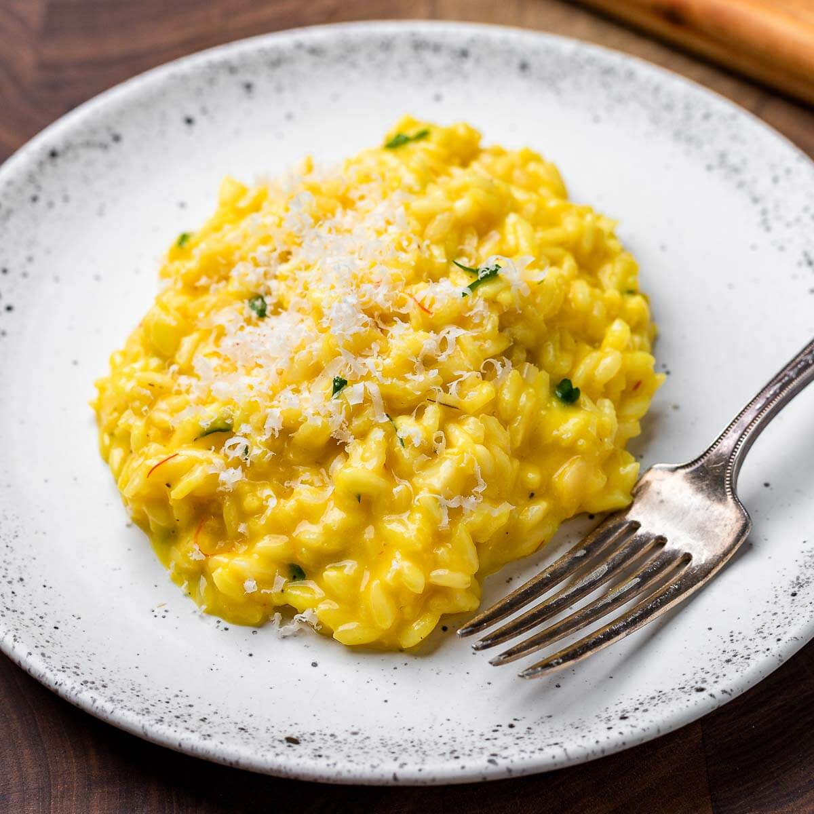

Risotto
alla
milanese

Czas przygotowania: 130 min
Typ diety: dowolna
Typ posiłku: obiad
Risotto
alla
milanese
Czas przygotowania: 130 min
Typ diety: dowolna
Typ posiłku: obiad
Zmiażdżony (nieposiekany) czosnek, szalotkę pokrojoną w drobną kostkę i szynkę parmeńską pokrojoną w paski delikatnie przesmażamy na patelni na rozgrzanym oleju z gałązką rozmarynu.
Sparzone wrzątkiem różyczki brokułu przekrawamy na pół i układamy na rozgrzanej patelni z oliwą – płaską stroną do dołu. Przesmażamy z jednej strony na złoty kolor. Risotto wykładamy na talerz. Na wierzchu układamy porwane na mniejsze kawałki plasterki szynki parmeńskiej, pomidory z oliwą i bazylią oraz przesmażone różyczki brokułu. Całość oprószamy parmezanem startym na tarce o drobnych oczkach.